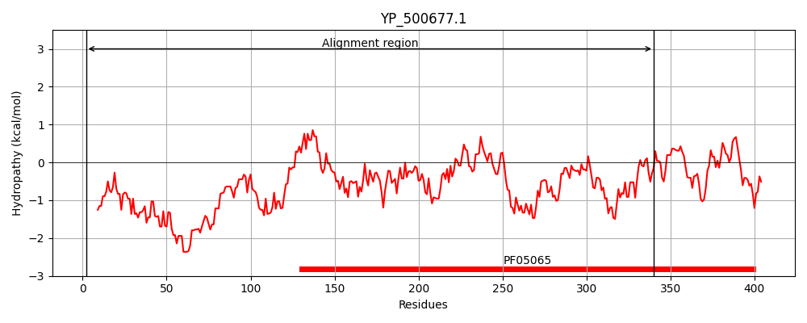
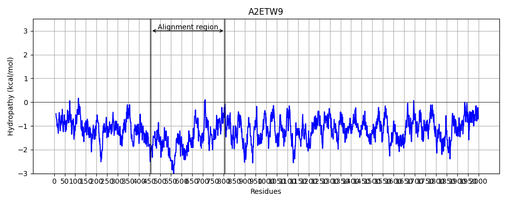
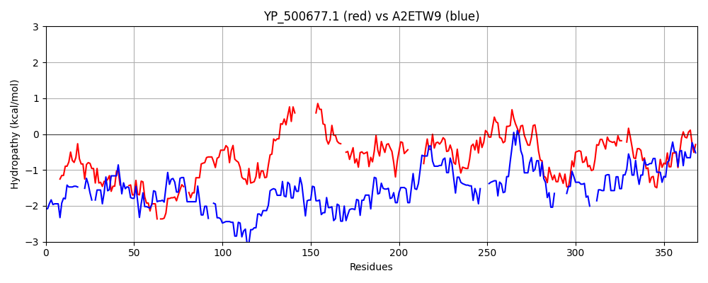

Hit Accession: A2ETW9
Hit TCID: 1.C.105.2.2
Hit Description: gnl|BL_ORD_ID|249 gnl|TC-DB|A2ETW9|1.C.105.2.2 Viral A-type inclusion protein, putative OS=Trichomonas vaginalis GN=TVAG_192230 PE=4 SV=1
Mach Len: 369
e:0.000554
Query TMS Count : 0
Hit TMS Count: 0
TMS-Overlap Score: 0.000000
Predicted Substrates:CHEBI:3473;cation
BLAST Alignment:
Score: 97 , Bit scores: 41 bits, E-value: 5.5e-04, Alignment length: 369, Percentage identity: 21
Query: 2 KTKEELQSEISDIKRQIDLKVKYATRALNNDELEKAEKLEQEI----TDLRSQIQEKQEELDKL-KEKDGTSENNQQSV--EVNEASTYRNQANINDLGISIQNTKVTSQEVRDFTEYLETRNDIQGGSLKTDSGFVVIPEE-----------IVTDILKLKEVEFNL--DKYVTVKRVTNGSGKYPVVRQSEVAALEKVEELEEN--------PELAVKPFFQLAYDINTHRGYFRISREAIEDAKVNVLQELKLWMARTIAATRNKAIIDVITKGSTGSTSSGFEKEGKKLEVKKAKSLDDIKDAINLNVKPNYEHNVAIVSQTM--FAKLDKMKDKLGNYLIQPDVKEKTQQRLLGAKIEILPDEV 340
K E ++EIS + + +L Y R ND+L K+ + + EI + +Q++EK+++ DKL +EK + N + + E+ E Y+ + DL +Q K QE + L+ N+ L+ V+ EE + I +LKE + N D K + + K ++ +++E+ +EN +L K + + D N ++ IED K +E + + +I ++ ++V+ K E E K + ++++ I+ K N+E+N + + + +KL + + + N L V++ + +KI L +E+
Sbjct: 456 KENENQKNEISSLTNEDEL---YKLRE-ENDKLIKSREAQNEIIQKLNNEMNQMKEKEKDFDKLAQEKKLLKDENDRLINSEMEELDKYKKEN--QDLNNELQRIKNERQENENKENNLKQGNEQLNEELQRTKQTVINKEEELKKVRDEADKLRKKIEELKEKQQNQINDNEELRKEIKSSEEKMKEIQSENEILKKQIEKEDENSSNISDDLQKLVNKSLVKESIDENNDVETIENLKKEIEDLK----KEKDNFDSISIENEDLRSQVEVLIKVEDERNQMSEELE------KLRANYNELQSQIS---KQNFENNKETIEKLIGEKSKLQEELESIKNELDSIQVEKIESENESSSKIIALTEEI 805 | Protein Hydropathy Plots: |
|---|
|  |  |
Pairwise Alignment-Hydropathy Plot:
|
|---|
|  |